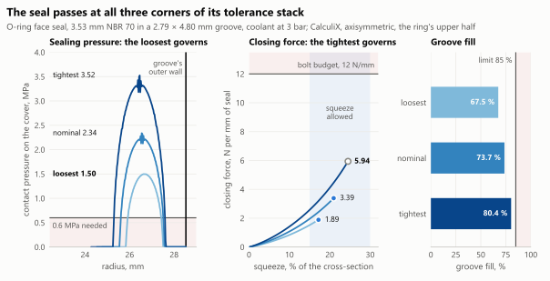
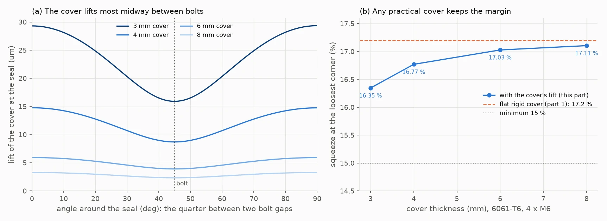
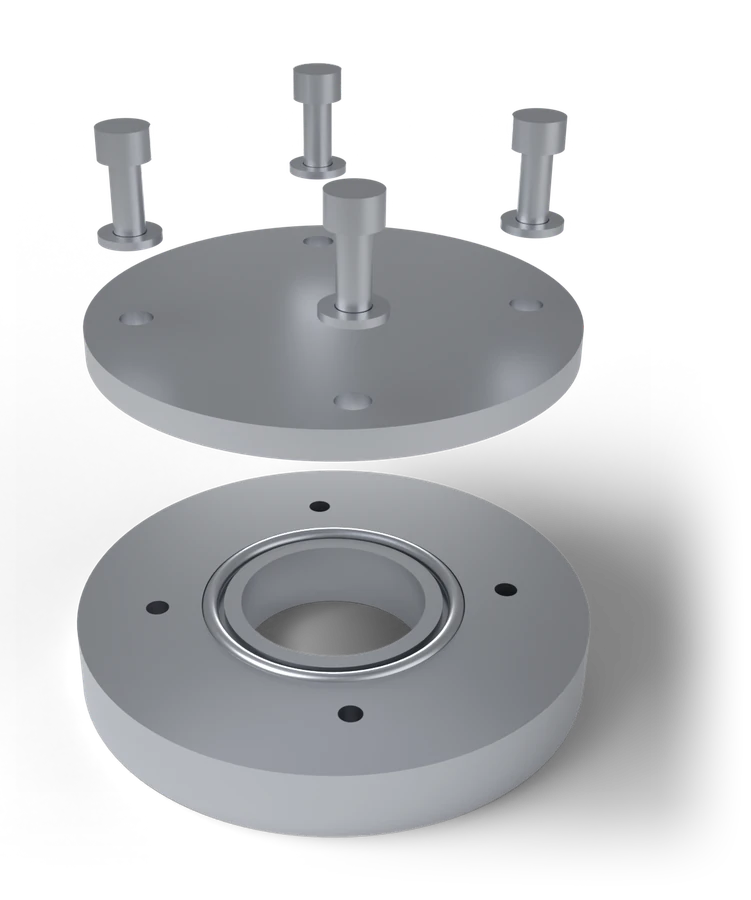

The Question
An aluminium cover seals a coolant pump, water-glycol at up to 3 bar, with a nitrile (NBR) O-ring in a face groove. Every dimension has a tolerance: the ring's cross-section is 3.53 ± 0.10 mm, the groove 2.79 ± 0.05 mm deep and 4.80 ± 0.05 mm wide, and the rubber 70 ± 5 Shore A. At every corner of that stack, does the ring stay within 15 to 30 % squeeze, press on the cover at the peak with at least twice the sealed pressure, close with no more than the bolts' 12 N per millimetre of seal, and fill no more than 85 % of the groove? The client, the limits and the compound are made up; the relation from hardness to stiffness, the force-squeeze reference and the measured force band are published.
The Answer
Yes, at all three corners, with margin. The loosest stack, a thin ring in a deep groove in the softest rubber, still presses on the cover at 1.50 MPa, 2.5 times the 0.6 MPa needed. The tightest, a thick ring in a shallow groove in the hardest rubber, needs 5.94 N per millimetre to close, half the bolts' budget. The closest margin is the fill: 80.4 % against 85 at the tightest corner.
A squeezed O-ring grows in diameter. Rubber barely changes volume, so squeezing the section spreads it round the ring as well as across it. With nothing holding it, the model's ring drifted 1.7 to 2.0 mm outward. The groove's outer wall stops it, and that adds 40 % to the closing force compared with a free ring. A flat 2D section would miss this; the model is axisymmetric, so it sees the ring's hoop.
Two cross-checks missed by a hair, and I left them as misses. At the tightest corner the hand estimate of the fill differs from the model's by 1.05 %, against the 1 % I set before the runs. The hand estimate assumes the ring's section keeps its area, but the outer wall pushes the ring inward to a smaller radius, so with its volume unchanged the section grows by about 1 %. The model's fill is the better number. And in the Hertz reference case, the contact pressure added up to the closing force within 3.08 %, against a 3 % tolerance. Neither touches a verdict: every margin is a factor of two or more.
Part 2 checked the flat, rigid cover. A real cover bends between its bolts. On a 4 mm cover the seal lifts about 15 µm, a fifth of the 75.5 µm the squeeze can spare, so the answer above stands. The flatness of the machined faces matters more than the cover's thickness.
The Model
- Part
- One cross-section of the ring in its groove, axisymmetric about the pump's axis. The groove bottom and the cover are flat and the contact frictionless, so the mid-plane is a plane of symmetry and the upper half of the section is modelled. The ring sits against the groove's outer wall, as it should for pressure from the inside.
- Material
- Neo-Hookean rubber, nearly incompressible (bulk modulus 1,000 times the shear modulus). The stiffness comes from the hardness by Gent's relation: 4.43, 5.52 and 7.05 MPa at 65, 70 and 75 Shore A. The cover and the groove walls are steel, effectively rigid against the rubber.
- Contact
- Node-to-surface penalty contact, frictionless. The cover moves down by half the squeeze.
- Mesh
- Quadratic elements from Gmsh, 0.05 mm where the contact grows; 0.1, 0.07 and 0.05 mm for the mesh study at the tightest corner.
The case file: recorded assumptions, limits and inputs
This is the study's own record, written before the run and saved with it, in the shorthand of the case file.
cases/oring_seal_corners.toml ↗
O-ring face seal, 3.53 mm NBR in a 2.79 x 4.80 mm groove against its outer wall, squeezed by a cover: the loosest, nominal and tightest corners of the tolerance stack (cross-section, groove depth and width, hardness 65 / 70 / 75 Shore A) against squeeze, contact pressure, closing force and fill requirements.
Assumptions, and How Each Is Checked
- Axisymmetric; the mid-plane is a symmetry plane (flat groove bottom and cover, frictionless contact, quasi-static), so the upper half of the cross-section is modelled.
- Neo-Hookean rubber, E from Shore A by Gent's relation (synthetic compound; the hardness tolerance carries the material uncertainty), near-incompressible (K = 1000 G; checked: volume conservation).
- Steel cover and groove walls (E 200 GPa, effectively rigid against the rubber).
- Installed against the groove's outer wall (internal pressure); the ring's ID follows the cross-section so its OD equals the groove OD at every corner.
- Unpressurised installation: the 0.3 MPa sealed pressure enters only through REQ-E2's 2 x rule, not as a load.
Limits
- No friction, no compression set or stress relaxation over time, no temperature effects on the compound.
- Lindley's relation is empirical and its exponents are not yet confirmed from a second source; Parker's band is wide (a factor of about 6.6).
- No physical test data.
Inputs
| Input | Value |
|---|---|
| cross_section_mm | 3.53 |
| ring_inner_diameter_mm | 50 |
| groove_depth_mm | 2.79 |
| groove_width_mm | 4.8 |
| groove_outer_diameter_mm | 57.06 |
| groove_walls | 1 |
| shore_a | 70 |
| bulk_to_shear | 1000 |
| contact_element_size_mm | 0.05 |
| far_element_size_mm | 0.2 |
| penalty_factor | 10 |
Why It Matters
An O-ring groove is usually sized from a handbook table at nominal dimensions. Whether a seal leaks or needs too much bolt force is decided at the corners of the tolerance stack: the loosest one for sealing, the tightest for force and fill. A model at the corners gives the margins against each requirement, and the contact pressure on the cover, which a handbook table doesn't give.
How It Works

CalculiX squeezes the ring in steps and records the closing force at each one, the pressure along the cover at the end, and the ring's deformed area, which gives the fill. The same model runs at the three corners of the stack:
| Corner | Squeeze | Closing force | Peak pressure | Groove fill |
|---|---|---|---|---|
| Loosest: 3.43 mm ring, 2.84 mm deep, 65 Shore A | 17.2 % | 1.89 N/mm | 1.50 MPa | 67.5 % |
| Nominal: 3.53 mm, 2.79 mm, 70 Shore A | 21.0 % | 3.39 N/mm | 2.34 MPa | 73.7 % |
| Tightest: 3.63 mm, 2.74 mm, 75 Shore A | 24.5 % | 5.94 N/mm | 3.52 MPa | 80.4 % |
| Requirement | 15 to 30 % | ≤ 12 N/mm | ≥ 0.6 MPa | ≤ 85 % |
How I Checked It
- Hertz line contact at a light 5 % squeeze, where the theory holds: at the model's own force, the peak pressure agrees within 1.6 % and the contact width within 0.3 %.
- Lindley's force-squeeze relation for a ring with nothing holding it sideways, which is his test case, so the model runs without the groove walls: within 10.6, 0.05 and 8.1 % at 10, 20 and 30 % squeeze, against the 15 % I allowed for an empirical fit.
- Parker's measured force band for this cross-section and hardness (O-Ring Handbook ORD 5700, Fig. 2-6, read from the PDF's vector lines): the free ring's force is inside it at every squeeze. The band is wide, a factor of about 6.6, so it's a sanity check rather than a tight one.
- The physics adds up: the ring's volume is conserved to 5 × 10⁻⁴ or better, and the contact pressure integrates to the closing force within 2 % at every corner.
- Mesh study at the tightest corner: the mesh uncertainty is 1.1 % on the closing force, 0.04 % on the peak pressure and 0.02 % on the fill.
What I Caught Along the Way
- A ring that wandered off. Centred in the groove with nothing holding it, the squeezed ring drifted 1.7 to 2.0 mm outward. That's real physics, the ring growing in diameter, and it's why the groove walls are in the design model.
- A contact setting borrowed from the steel models. The tension the contact law allows at small gaps, copied from my steel contact models, let the rubber's edges pull on the cover, and the pressure missed the force by up to 47 %. Fixed before any evidence run.
- Pressures that alternate node to node. CalculiX gives the corner and mid-side nodes of a quadratic face equal areas, so their pressures alternate by about 30 %. I report the average of neighbouring nodes, and the force balance confirms it. What's left shows as the small ripple at the top of each pressure curve.
- A reference run that stopped halfway. The free ring, held sideways only by its own hoop stiffness, went numerically singular at 26.5 % squeeze. Smaller load steps fixed it, and the failed run is kept.
Part 2: The Cover Between Its Bolts
The model above takes the cover as flat and rigid. A real cover is a plate held at its bolts, and the 3 bar inside the seal and the O-ring's own push lift it between them. Any lift at the seal comes straight off the squeeze. At the loosest corner the squeeze is 17.2 % against a 15 % minimum, so the cover may lift only 75.5 µm at the seal, and a first plate-theory estimate put the lift in that range. So I modelled the cover.
Part 1 never drew one, and on a real job I'd ask the client for it. Here it's a synthetic design: 6061-T6 aluminium, 96 mm across, with 4 M6 bolts on a 76 mm circle. That turns the question into a design one: how thin can the cover be?
The flat-cover assumption holds for any practical cover. Midway between the bolts, where it lifts most, a 4 mm cover lifts 15.1 µm and a 3 mm one 29 µm, 39 % of the allowance. The squeeze at the loosest corner stays above 16.3 % for every thickness.
Flatness matters more than thickness. A gap from a flatness tolerance adds to the lift one for one. A 0.05 mm flatness callout on a 4 mm cover would use 86 % of the allowance. I'd hold the faces' flatness well under that on the drawing, not thicken the cover.

| Cover | Lift at the seal | Share of the 75.5 µm allowance | Squeeze, loosest corner (15 % minimum) |
|---|---|---|---|
| 3 mm | 29.3 µm | 39 % | 16.35 % |
| 4 mm | 14.8 µm (15.1 extrapolated) | 20 % | 16.77 % |
| 6 mm | 5.9 µm | 8 % | 17.03 % |
| 8 mm | 3.3 µm | 4 % | 17.11 % |
| Flat and rigid (part 1) | 0 | 0 | 17.20 % |

The model. A quarter of the cover, built in CadQuery and meshed with quadratic tetrahedra. The 3 bar pushes on its underside out to the groove's outer diameter, and the O-ring pushes with part 1's reaction at the loosest corner, held constant as the cover lifts, though really it falls. The washers hold the cover down but let it slide and pivot, the pump is rigid, and the rim beyond the bolts is left unsupported. Each of those choices errs toward more lift. The lift is read exactly on the O-ring's centre circle, at 181 points.
How I checked it. The same cover, simply supported at its edge under 3 bar, deflects 73.35 µm at the centre against 72.98 µm from plate theory with shear included: 0.5 % apart. The washer reactions balance the load to 1 part in 10⁸. Four meshes of the 4 mm cover give 14.37, 14.60, 14.81 and 14.92 µm, converging toward 15.06 µm with a mesh uncertainty of 1.2 %; I predicted all four values before the run.
What I caught. The first runs read the lift at the nodes nearest the seal circle. Those sit at slightly different radii, so the lift came out as a sawtooth, up to 5 % high at its peaks. Those runs are kept as evidence, and the lift is now read exactly on the circle. With that fixed, the first three-mesh study of the 4 mm cover gave 14.50, 14.60 and 14.81 µm. The second step is twice the first, so the convergence check called it divergent and that run fails; it stays on record with its tolerance unchanged. I traced two causes. The coarsest mesh was partly shaped by Gmsh's curvature sizing, a trap an earlier study had already recorded. And the lift converges slowly where the rigid washer patch meets the plate. A second study with curvature sizing off and a fourth, finer mesh passes, as above.
Limits
- Part 2's cover is synthetic: geometry, material and bolts. The answer is the lift for each thickness, to set against the real cover once the client supplies it. No bolt stretch, flange flexibility or flatness gap is modelled.
- Frictionless and quasi-static. No compression set or stress relaxation over time, no temperature effect on the rubber, and no extrusion under pressure: the 3 bar enters only through the twice-the-pressure rule.
- The rubber's stiffness comes from its hardness alone. A client's compound data would replace it.
- Lindley's exponents come from a copy whose text is garbled, so they aren't confirmed from a second source.
- No physical test of this seal.